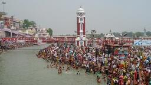
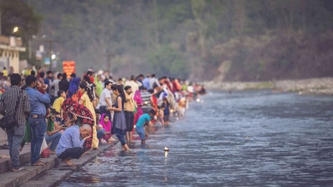

CHAR DHAM
EMBARK ON A SACRED JOURNEY
This Yatra or pilgrimage is a tour of four holy sites - Yamunotri, Gangotri, Kedarnath and Badrinath - nestled high up in the Himalayas. In Hindi, 'char' means four and 'dham' refers to religious destinations. The Yamunotri temple, lodged in a narrow gorge close to the source of River Yamuna (the second-most sacred Indian river after River Ganga) in Uttarkashi district, is dedicated to Goddess Yamuna. The district of Uttarkashi is also home to Gangotri dedicated to Goddess Ganga, the most sacred of all Indian rivers. Located in the Rudraprayag district lies Kedarnath, dedicated to Lord Shiva. Badrinath, home to the sacred Badrinarayan Temple, is dedicated to Lord Vishnu. The Char Dham Yatra is as divine as it is arduous but fulfills the soul!
PLACES OF INTEREST
 KEDARNATH |
 YAMUNOTRI |
 GANGOTRI |
 BADRINATH |
 HARIDWAR |
 RISHIKESH |
ITINERARY
4 Days/4 Night₹30000 per head
DAY 1
Kharsali is also the starting point for the trek to the holy site of Yamunotri. Kharsali is home to several ancient temples, including the Kharsali Temple dedicated to Lord Shiva.Next our visit to Divya Shila.It is a sacred rock located in the town of Yamunotri in Uttarakhand, India.At the site of Divya Shila, there is a small temple dedicated to Lord Vishnu.
Next we visit to Yamunotri temple,the Birthplace of Yamuna.Surya Kund is a natural hot water spring located near the Yamunotri Temple
DAY 2
The Gangotri Temple is a holy site for Hindus. Dedicated to the Hindu goddess Ganga, this temple is the holiest and most revered of all her shrines.The northernmost point of the Chaukhamba Mountains is the source of the Gangotri Glacier. It's the place where the sacred Ganga River begins.Gomukh, also known as Gaumukh, is the sacred region from whence the holy Bhagirathi River flows, making it one of the holiest places in all of Uttarakhand.
DAY 3
Kedarnath Temple is one of the Char Dhams (where Hindus can achieve instant moksha). It is one of the holiest shrines dedicated to Lord Shiva.Situated atop a hillock at distance of mere 600 meters from the Kedarnath Temple, Bhairavanath shrine is dedicated to Lord Bhairav, the chief manifestation of Lord Shiva.The Vishwanath Temple, dedicated to Lord Shiva, is located in the town of Guptkashi. The place is an important stop-over for pilgrims visiting Kedarnath Temple
DAY 4
As a must-visit temple of the famous Char Dham Yatra, the Shri Badrinath Dham in Uttarakhand's Chamoli district is home to the Badri Narayana avatar of Lord Vishnu.CHeck out from camp and later travel representatives will drop of to airport/railway station.